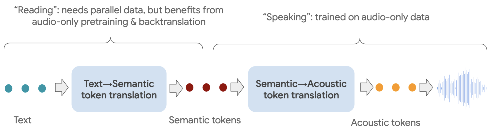

|paper|
Eugene Kharitonov, Damien Vincent, Zalán Borsos, Raphaël Marinier, Sertan Girgin, Olivier Pietquin, Matt Sharifi, Marco Tagliasacchi, Neil Zeghidour
Google Research
Abstract. We introduce SPEAR-TTS, a multi-speaker text-to-speech (TTS) system that can be trained with minimal supervision. By combining two types of discrete speech representations, we cast TTS as a composition of two sequence-to-sequence tasks: from text to high-level semantic tokens (akin to "reading") and from semantic tokens to low-level acoustic tokens ("speaking"). Decoupling these two tasks enables training of the "speaking" module using abundant audio-only data, and unlocks the highly efficient combination of pretraining and backtranslation to reduce the need for parallel data when training the "reading" component. To control the speaker identity, we adopt example prompting, which allows SPEAR-TTS to generalize to unseen speakers using only a short sample of 3 seconds, without any explicit speaker representation or speaker-id labels. Our experiments demonstrate that SPEAR-TTS achieves a character error rate that is competitive with state-of-the-art methods using only 15 minutes of parallel data, while matching ground-truth speech in terms of naturalness and acoustic quality, as measured in subjective tests.

SPEAR-TTS operates in two stages, each solving a sequence-to-sequence task. The first stage ("reading") maps the input text transcript to a sequence of semantic tokens. The second stage ("speaking") converts semantic tokens to acoustic tokens. Acoustic tokens are decoded to audio waveforms using a SoundStream decoder (Zeghidour et al., 2021). With this setup, only the first stage requires parallel text-audio data during training, while the second stage can be trained using abundant audio-only data. By combining audio-only pretraining and backtranslation when training the first stage, we reduce the amount of parallel data required to train a high-fidelity TTS system to as little as 15 minutes.
In the first set of samples, we demonstrate that SPEAR-TTS synthesizes speech that adheres to the input text even when trained on very limited parallel data.
In the following table, we provide speech samples produced by SPEAR-TTS trained on a 15 min subsample of LJSpeech (Ito and Johnson, 2017). As inputs, we consider transcripts from LibriTTS test-clean examples (Zen et al., 2019). The models did not see any of these examples during training. In this experiment, we do not prompt our model to follow any specific voice. Note that SPEAR-TTS generates speech in multiple voices, even though it is trained on the single-speaker parallel data. As a reference baseline, we also provide speech samples produced by a modification of FastSpeech2 (Ren et al, 2020), adapted for the low-resource scenario (Pine, 2022). We refer to it as FastSpeech2-LR. These models are trained on subsets of LJSpeech.
| Text | Ground-truth | FastSpeech2-LR (24 h) | FastSpeech2-LR (15 min) | SPEAR-TTS (15 min) |
|---|---|---|---|---|
In the next experiment, we show how fidelity to the text changes for various training scenarios, as we vary the amount of available parallel data. '-' indicates that the speech synthesized by the corresponding model is not intelligible.
| Amount of paired data | From scratch | + Pretraining | + Backtranslation |
|---|---|---|---|
| Text: Whoever, therefore, is ambitious of distinction in this way ought to be prepared for disappointment. | |||
| 24h | |||
| 12h | |||
| 3h | |||
| 2h | |||
| 1h | |||
| 30min | - | ||
| 15min | - | - | |
| Text: Suddenly, for the purpose of restoring peace and order, Spring, accompanied by his whole court, made his appearance. | |||
| 24h | |||
| 12h | |||
| 3h | |||
| 2h | |||
| 1h | |||
| 30min | - | ||
| 15min | - | - | |
In this experiment we show that, for a fixed text input, SPEAR-TTS is able to generate diverse speech that varies in terms of prosody and voice characteristics. We use the SPEAR-TTS model trained on a 15 minute subset of LJSpeech (single-speaker) as parallel data. We use transcripts from LibriTTS test-clean (Zen et al., 2019).
| Text | Sample #1 | Sample #2 | Sample #3 | Sample #4 |
|---|---|---|---|---|
In the following set of samples we show that, when prompted with a 3-second sample, SPEAR-TTS generates an utterance that is faithful to the prompted voice. Here, voices are selected from LibriSpeech test-clean (Panayotov et al., 2015), so the model has never seen them during training, thus demonstrating zero-shot generalization. We use the SPEAR-TTS model trained on a 15 minute subset of LJSpeech (single-speaker) as parallel data.
| Prompt | Sample #1 | Sample #2 | Sample #3 | Sample #4 |
|---|---|---|---|---|
| Text: "And yesterday things went on just as usual" | ||||
| Speaker #1 Prompt #1 | ||||
| Speaker #1 Prompt #2 | ||||
| Speaker #2 Prompt #1 | ||||
| Speaker #2 Prompt #2 | ||||
| Text: "I see a crowd in one corner of the garden everybody standing still and looking up" | ||||
| Speaker #1 Prompt #1 | ||||
| Speaker #1 Prompt #2 | ||||
| Speaker #2 Prompt #1 | ||||
| Speaker #2 Prompt #2 | ||||
We believe our work on high-quality TTS that requires very limited supervision (quantity- and quality-wise) can be an important stepping stone for enabling this core speech technology for communities that are currently underserved by TTS solutions due to speaking "low-resource" languages, i.e., languages do not have vast parallel corpora required for training deep learning models. Even for high-resource languages, such as English, the ability to harness unpaired data for speech generation can enable producing speech in accents and dialects that are currently uncovered by the existing TTS systems.
At the same time, we acknowledge that the ability to mimic a voice can have numerous malicious applications, including bypassing biometric identification for the purpose of impersonation. Thus it is crucial to put safeguards against the misuse of SPEAR-TTS and, as an initial step, we verify that speech produced by SPEAR-TTS can be reliably detected by a classifier (see Appendix E). In the future, one can explore other approaches for detecting synthesized speech, for example by audio watermarking.